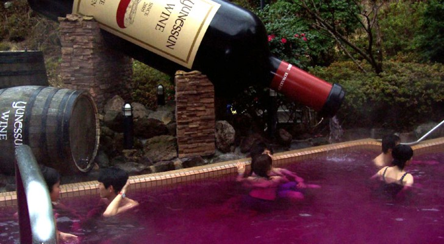

Winetherapy with Edgar
If you've found your way to this page, it's because you're totally into a week of wine therapy with Edgar, or at least you're interested.
Now you probably have some questions like: who is Edgar, what are Edgar's qualifications and why would I go on holiday with a wildly strange man for a week?
At Xtreme Freedom we understand you have these questions but we are not going to answer them for you, instead we ask you to trust us and embark on the adventure with Edgar. What we do want to share about this fantastic trip is the program!
The first day!

Edgar will pick you up at home and you will hand in your phone, it is very important to break all connections with the outside
world in order to let the healing process run smoothly. Then you will set off together towards the Champagne region in France!
Once you have arrived at your chateau, you have the rest of the day to get some rest and discover the surroundings.
The second day!

You get up early because this is a day full of activities! First Edgar will prepare a healthy breakfast for you,
Then you will go by coach to a vineyard where they still make wine in the same way as they did a hundred years ago.
First you get an extensive tour of the vineyard which will last until lunch, then you get to work yourself
and go through the whole process. After you have finished you discuss the day with a glass of wine and you
return to the château.
The third day!

This day is all about you, after breakfast you go for a long walk with Edgar through the surrounding nature.
Afterwards you will go to a local to eat an extensive lunch with of course a glass of local wine.
After lunch you will have a deep conversation with Edgar, the idea is that this is about your life
but of course you can fill this in yourself.
Today is about you!
The fourth day!

Today you are going to learn a lot about wine, in the morning you will be picked up by a local tour guide who
will take you to five different vineyards. The programme is different every time, so we can't give you
much information about what you are going to do exactly, but what we do know is that there will be an
extensive wine tasting and that you will return to your château around 10 o'clock in the evening.
The last day!

Unfortunately, the last day has already arrived, this does not mean that it will be a boring day.
On the way back you will go to several cafes, where you will taste a local wine and get a small bite
to eat. At the last café, you will have dinner and discuss the trip, afterwards Edgar will bring you
home and you will say your final goodbye.
.